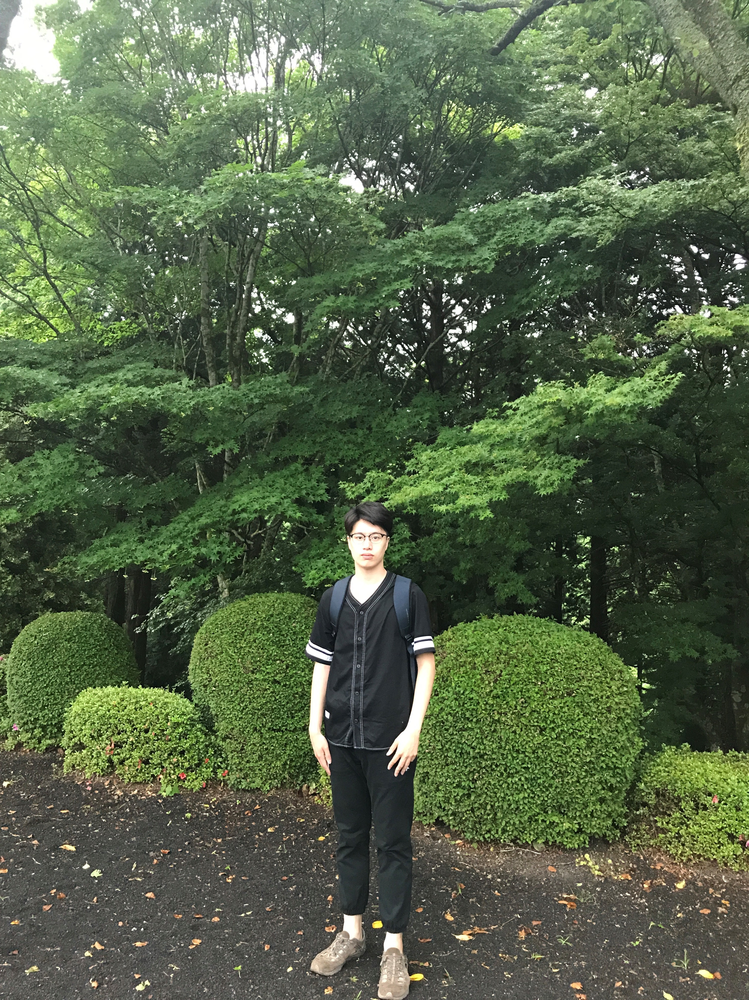

个人信息
姓 名：朱俊辉
性 别： 男
年 级： 研二(2020年毕业)
电 话： 15543401586
邮 箱： tommyzhu0095@126.com
出生年月： 1995年3月
户 籍： 北京
研究方向： 无人机视觉跟踪控制系统
教育经历
2017.09-2020.07 吉林大学 通信工程学院 模式识别与智能系统 在读硕士
2013.09-2017.07 北方工业大学 电气工程与控制学院 自动化 工学学士
成果与奖励
2019/6 EI期刊《自适应模板更新的尺度核相关滤波跟踪方法》导师外第一作者（投稿）
2019/3 发明专利《一种基于颜色概率目标建议窗口的核相关滤波跟踪方法 》导师外第一发明人
2017/11 吉林省高等学校机器人大赛空中机器人组 省级三等奖
2015/2016 北方工业大学电气工程与控制学院体育奖学金 院级三等奖学金
个人技能
1、计算机水平-熟练掌握python编程，熟悉c++编程。
2、嵌入式-熟悉嵌入式内核，掌握嵌入式C语言、ARM 系列单片机等。
3、系统平台-熟悉ROS下机器人项目开发，熟悉linux/windows环境下opencv库开发， 熟悉Keil、VisualStudio、CodeWarrior等平台。
4、外语水平-通过英语六级（2016年6月），具有良好的英文口语以及读写能力。
5、实验环境-了解目标跟踪数据集OTB、VOT的使用方法。熟悉机器人仿真软件V-rep和gazebo。
个人爱好和性格
爱好：篮球、读书，足球，游泳、电影。
性格：生活方面乐观开朗，待人友善，容易相处，有时会有一些理想主义，忠于内心；
做事上沉着冷静，思维敏捷，善于总结问题，脚踏实地，有很强的责任心。
个人生活照
